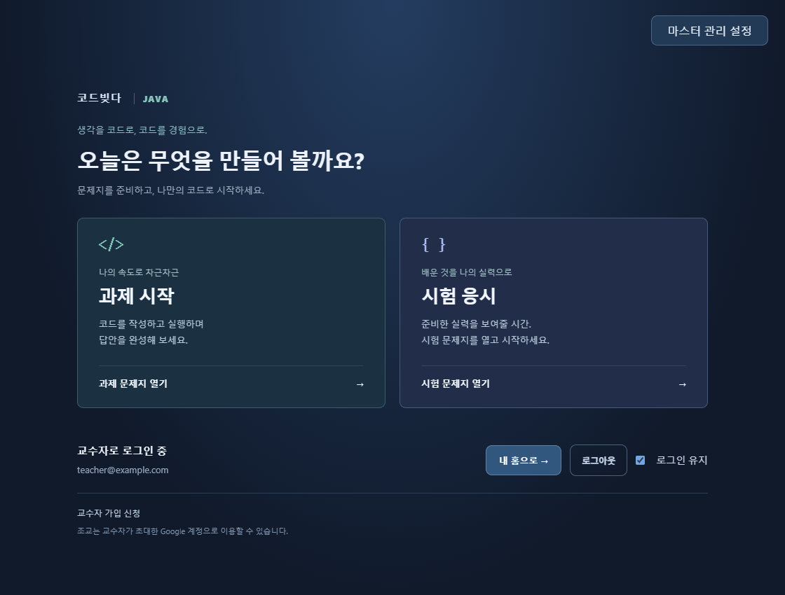
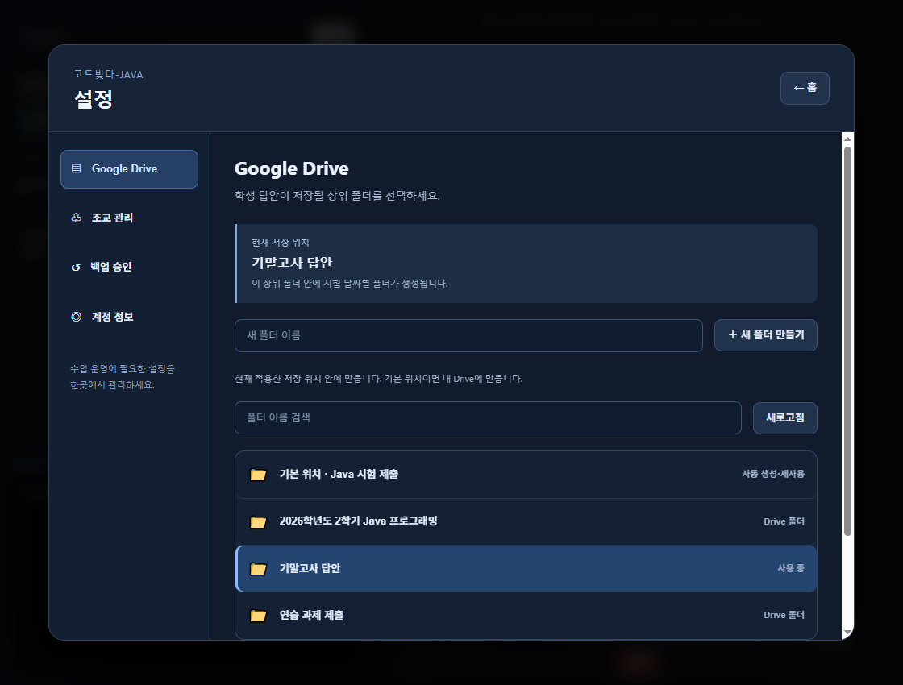

코드빚다-JAVA
JAVA 2.0.0 · Mac 다운로드 / Windows Microsoft Store직접 실행하며
배우는 Java.
콘솔부터 Swing까지.
실습·과제·시험을 한곳에서 시작하세요.
Mac에서 코드빚다 Java를 시작하세요.
macOS 13 이상 · Apple Silicon(M1 이후) 전용 · Intel Mac 미지원
Java 실행 환경이 포함되어 있어 별도 JDK 설치가 필요하지 않습니다.
임시 서명 · Apple 공증 미적용. 설치 안내문은 DMG 안에도 포함되어 있습니다.
코드빚다 Java Mac 설치 방법
JDK가 앱에 포함되어 있습니다. Java나 JDK를 따로 설치하거나 경로를 설정할 필요가 없습니다.
- 위의 Java Mac DMG를 다운로드하고 엽니다.
- 코드빚다-JAVA.app을 DMG 안의 Applications(응용 프로그램) 폴더로 드래그합니다.
- 복사가 끝나면 Finder의 응용 프로그램 폴더에서 코드빚다-JAVA를 실행합니다. 보안 경고가 나오면 아래 안내를 확인하세요.
- 앱이 열리면 담당 교강사의 안내에 따라 과제 시작 또는 시험 응시를 선택합니다. 설치 디스크는 추출해도 됩니다.
학생은 Google 로그인 없이 과제·시험에 참여합니다. 교수·조교·마스터는 앱에서 Google 로그인을 사용합니다.
현재 Mac 2.0.0은 임시 서명 배포본이며 Apple 공증은 포함되지 않습니다. 이 홈페이지에서 받은 코드빚다-JAVA 앱인지 확인하고 아래 안내를 따라 주세요.
개발자를 확인할 수 없거나 Apple에서 확인할 수 없다고 나와요.
코드빚다-JAVA 실행을 한 번 시도한 뒤 시스템 설정 → 개인정보 보호 및 보안 → 그래도 열기를 확인하세요. 열려는 앱 이름이 코드빚다-JAVA인지 확인합니다. 학교에서 관리하는 Mac에서 허용할 수 없다면 담당 관리자에게 문의하세요.
앱이 손상되었다는 메시지가 나와요.
다운로드와 앱 복사가 끝났는지 확인하고, 위의 Java Mac DMG를 다시 다운로드하여 설치해 주세요. 그래도 같은 메시지가 나오면 오류 화면과 macOS 버전을 담당 교강사에게 전달해 주세요.
직접 풀고,
실행하며 확인하세요.
제공된 문제와 시작 코드를 바탕으로 핵심 코드를 작성합니다. 출력 비교가 가능한 문제는 실행 결과를 확인하고, 서술형과 그래프는 교수자의 검토를 받습니다.
수업의 기록은
교수자의 Drive에.
교수자는 Google 계정으로 가입하고 승인 후 자신의 Drive를 연결합니다. 초대한 조교와 문제를 수정하고 채점하며, 학생은 Google 로그인 없이 답안을 제출합니다. 제출 파일과 제출학생명단은 연결된 교수자의 폴더에 저장됩니다.
Windows에서 코드빚다-JAVA를 시작하세요.
Windows용 Java 실습·과제·시험 앱입니다. Microsoft Store에서 Windows 버전을 설치할 수 있습니다. 교수자 서비스는 가입 후 승인이 필요합니다.
JDK 내장 · 콘솔 및 Swing 실행 · 출력 비교 자동채점 · 교수자 확인 채점 · 20초 간격 암호화 백업 · 교수자 승인 복구를 지원합니다.
시험 모드에서는 창 이동 제한과 보조 모니터 가림이 적용됩니다. 과제 모드와 구분해 이용하세요.
실제 앱 화면
과제와 시험을 시작하고, 교수자 홈에서 출제·수정·채점을 관리합니다. 아래 화면은 예시 계정과 테스트 폴더로 촬영했습니다.


